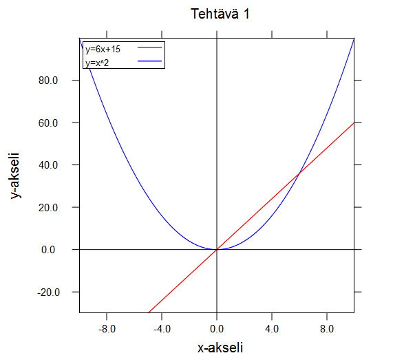
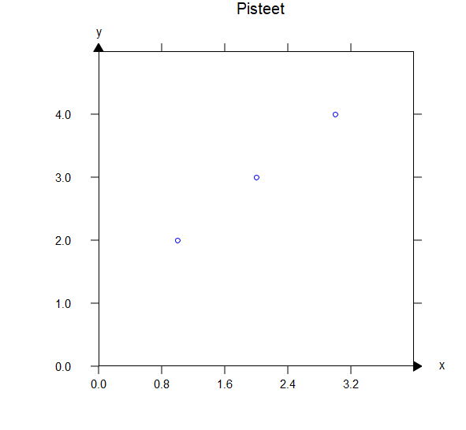
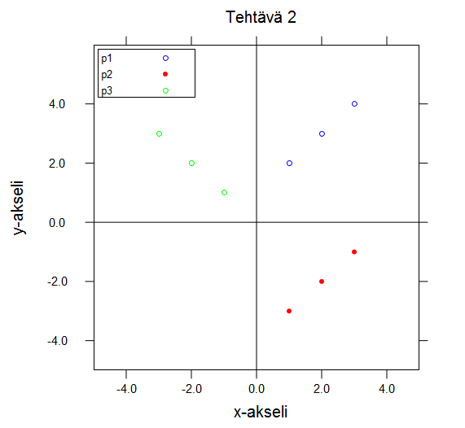
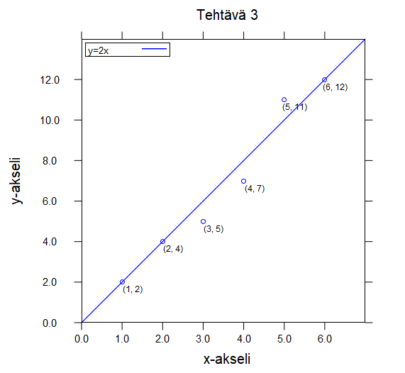

6.12
7.1 Kuvaajat (plot)
procedure
(function funktion-nimi x0 xn väri selite) → funktio
funktion-nimi : funktio x0 : reaaliluku xn : reaaliluku väri : image-color? selite : merkkijono
Määrittelee piirrettävän funktion nimen funktion-nimi sekä piirtovälin x0-xn.
Funktiolle annetaan myös funktion kuvaajan väri:n sekä siihen liitettävä selite-tekstin.
Jos selitettä ei haluta antaa, käytä selitteenä tyhjää merkkijonoa "".
procedure
(points pisteet x0 xn y0 yn väri tyyli selite) → funktio
pisteet : lista<posn?>/lista<cons?>/lista<vector?> x0 : reaaliluku xn : reaaliluku y0 : reaaliluku yn : reaaliluku väri : image-color? tyyli : mode? selite : merkkijono
Määrittelee piirrettävät pisteet listana pisteet. Voit halutessasi säätää aluetta, jolle pisteet piirretään
antamalla x:n rajat x0-xn sekä y:n rajat y0-yn. Functiolle annetaan myös
pisteiden väri ja tyyli sekä niihin liitettävä selite-teksti. Jos selitettä ei haluta antaa,
käytä selitteenä tyhjää merkkijonoa "".
Piirrettävät pisteet voidaan antaa joko listana posn-tietueita tai
x- ja y-koordinaatit sisältäviä listoja. Voit antaa pisteet myös vector-muodossa mutta tarvitset
silloin käyttöösi Advanced Student Language:n. Funktiolle voidaan antaa myös yksi piste
pistelistan pisteet sijaan, jos haluaan sijoitaa vain yksi piste koordinaatistoon.
procedure
(labeled-points pisteet x0 xn y0 yn väri tyyli selite) → funktio pisteet : lista<posn?>/lista<cons?>/lista<vector?> x0 : reaaliluku xn : reaaliluku y0 : reaaliluku yn : reaaliluku väri : image-color? tyyli : mode? selite : merkkijono
Toimii kuin points mutta näyttää pisteen yhteydessä sen koordinaatit.
procedure
(lines pisteet x0 xn y0 yn väri tyyli selite) → funktio
pisteet : lista<posn?>/lista<cons?>/lista<vector?> x0 : reaaliluku xn : reaaliluku y0 : reaaliluku yn : reaaliluku väri : image-color? tyyli : mode? selite : merkkijono
Piirtää listan pisteet kuten points samalla yhdistäen pisteet murtoviivalla.
Voit halutessasi säätää aluetta, jolle pisteet piirretään antamalla x:n rajat x0-xn sekä
y:n rajat y0-yn. Functiolle annetaan myös
pisteiden väri ja tyyli sekä murtoviivaan liitettävä selite-teksti. Jos et halua
pisteitä näkyviin, anna tyyliksi "transparent".
Jos selitettä ei haluta antaa,
käytä selitteenä tyhjää merkkijonoa "".
Piirrettävät pisteet voidaan antaa joko listana posn-tietueita tai
x- ja y-koordinaatit sisältäviä listoja. Voit antaa pisteet myös vector-muodossa mutta tarvitset
silloin käyttöösi Advanced Student Language:n. Pisteitä on annettava vähintään kaksi, että viiva
voidaan piirtää.
procedure
(lines-labeled-points pisteet x0 xn y0 yn väri tyyli selite) → funktio pisteet : lista<posn?>/lista<cons?>/lista<vector?> x0 : reaaliluku xn : reaaliluku y0 : reaaliluku yn : reaaliluku väri : image-color? tyyli : mode? selite : merkkijono
Toimii kuin lines mutta näyttää pisteen yhteydessä sen koordinaatit.
procedure
(images pisteet x0 xn y0 yn kuva) → funktio
pisteet : lista<posn?>/lista<cons?>/lista<vector?> x0 : reaaliluku xn : reaaliluku y0 : reaaliluku yn : reaaliluku kuva : image?
Sijoitaa kuva:n jokaiseen annettuun koordinaattipisteeseen pisteet.
Kuva sijoitetaan koordiaattipisteeseen siten, että sen keskikohta on ko. pisteessä.
Voit halutessasi säätää aluetta, jolle kuvat piirretään antamalla x:n rajat x0-xn sekä
y:n rajat y0-yn.
Piirrettävät pisteet voidaan antaa joko listana posn-tietueita tai
x- ja y-koordinaatit sisältäviä listoja. Voit antaa pisteet myös vector-muodossa mutta tarvitset
silloin käyttöösi Advanced Student Language:n. Funktiolle voidaan antaa myös yksi piste
pistelistan pisteet sijaan, jos haluaan sijoitaa vain yksi kuva koordinaatistoon.
procedure
(plot funktion-tai-pisteiden-kuvaus x-teksti y-teksti otsikko) → kuva funktion-tai-pisteiden-kuvaus : funktio/lista<funktio> x-teksti : merkkijono y-teksti : merkkijono otsikko : merkkijono
Piirtää annetun funktion tai pisteet funktion-tai-pisteiden-kuvaus koordinaatistoon.
funktion-tai-pisteiden-kuvaus muodostetaan apufunktion function tai points
avulla.
Jos halutaan piirtää useampia kuvaajia samaan kuvaan annetaan lista, joka sisältää
useamman funktion (function), pistesarjan (points), murtoviivan (lines) tai
kuvan (images) määrittelyt.
plot-palauttaa kuvan.
Functiolle annetaan lisäksi x- ja y-akselien nimet x-teksti ja y-teksti sekä kuvan otsikko otsikko.
procedure
(plot-with-axes funktion-tai-pisteiden-kuvaus x-teksti y-teksti otsikko) → kuva funktion-tai-pisteiden-kuvaus : funktio/lista<funktio> x-teksti : merkkijono y-teksti : merkkijono otsikko : merkkijono
Toimii kuin plot mutta lisää x- ja y-akselin nuolineen näkyviin ja sijoittaa
x-teksti:n ja y-teksti:n akselien yhteyteen.
Esimerkkejä:
(plot (function sin (- pi) pi "red" "sin") "x" "y" "Tehtävä 1")
(plot (list (function cos (- pi) pi "red" "cos") (function sin (- pi) pi "blue" "sin")) "x" "y" "tehtävä 2")
(define (y x)(* 2 x)) (plot-with-axes (function y -10 10 "blue" "y=2x") "x" "y" "Suora y=2x")
(define (f x)(* x x)) (define (g x)(+ (* 6 x) 15)) (plot (list (function g -5 10 "red" "y=6x+15") (function f -10 10 "blue" "y=x^2")) "x-akseli" "y-akseli" "Tehtävä 1")

(plot-with-axes (points (list '(1 2) '(2 3) '(3 4)) 0 4 0 5 "blue" "outline" "") "x" "y" "Pisteet")

(define p1 (list (make-posn 1 2)(make-posn 2 3)(make-posn 3 4))) (define p2 (list '(1 -3) '(2 -2) '(3 -1))) (define p3 (map vector (list -3 -2 -1)(list 3 2 1))) (plot (list (points p1 0 5 0 6 "blue" "outline" "p1") (points p2 0 5 -5 0 "red" "solid" "p2") (points p3 -5 0 0 5 "green" "outline" "p3")) "x-akseli" "y-akseli" "Tehtävä 2")

(define (f1 x)(* 2 x)) (plot (list (function f1 0 7 "blue" "y=2x") (labeled-points (list '(1 2) '(2 4) '(3 5) '(4 7) '(5 11) '(6 12)) 0 7 0 14 "blue" "outline" "")) "x-akseli" "y-akseli" "Tehtävä 3")

(define p4 (list '(1 2) '(2 3) '(3 5))) (define p5 (list '(-1 2) '(-2 3) '(-3 5))) (plot-with-axes (list (lines p4 0 4 0 6 "blue" "transparent" "käyrä 1") (lines-labeled-points p5 0 -4 0 6 "green" "solid" "käyrä 2")) "x" "y" "Käyrät")
(define p6 (list '(1 -3) '(3 -3) '(3 -1)'(1 -3))) (define p7 (list '(-3 -2) '(-3 1) '(-1 1)'(-1 -2)'(-3 -2))) (plot (list (lines p6 -5 5 -5 0 "red" "solid" "") (lines p7 -5 5 -5 5 "cyan" "transparent" "") (images (make-posn 1 3) 0 5 0 5 (circle 40 "outline" "black")) (labeled-points (make-posn 1 3) 0 5 0 5 "black" "solid" "")) "x-akseli" "y-akseli" "Geometriset kuviot")